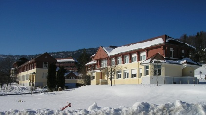

Housing
The housing is located in the mountain village of Autrans (Vercors - France) at 1080m of altitude ; in a nice holiday centre. Beside a big conference room, one can find inside the building a swimming pool, a squash field, a fitness room and a sauna. Autrans is located inside the natural parc of the Vercors mountain with beautifull snowy landscapes during the winter season.
Rooms and Prices
The registrations are accepted before January 22th 2009 and the payments (transfer and cheque) until March 15th. All the expenses (meals, room and registration) are inclusive for the four days and three nights:
- Single room: 300€ per person (including 49.16€ of VAT)
- Double room: 240€ per person (including 39.33€ of VAT).
The currency for payment is euros only. Once paid, their is no possibility of reimbursement. Possible payment modes are:
- Direct bank transfer to the following account:
IBAN: FR76-3000-4008-1800-0124-3810-927(if this payment has been chosen, please, mention it in the note section of the registration page with the number of the account used for the transfer ; to keep track of the payment).
BIC: BNPAFRPPPVD
Name of the bank: BNP Paribas
City: Paris AG Centr
Account owner: CEA - ABINIT 2009 - DF SFT Boite courrier 69 Bat 482 - Tresorerie centrale CEA Saclay - 91191 Gif sur Yvette Cedex - France - Cheque with 'CEA/ WORKSHOP ABINIT 2009' as the order. Please, send it by mail to the following address with a paper copy of the registration page inclosed:
Secretariat du SP2M / Workshop ABINIT 2009
CEA Grenoble
17, rue des Martyrs
38054 Grenoble Cedex 9
FRANCE - Direct payment at arrival with a Visa credit card (not recommended by organisers).
After the conference, an invoice will be given to testify your participation.
How to come?
Autrans is located in the Vercors mountain near Grenoble, France. Several possibilities are available to come to Grenoble:
- The train, 3h from Paris by direct TGV train (or 3h30 to 4h with a transfert in Lyon).
- The plane, arriving in Lyon Saint Exup�ry airport, then taking the bus (1h, 15€) directly to Grenoble).
- The plane, arriving in Saint Geoirs airport, then taking the bus (45min., 4€) directly to Grenoble.
From Grenoble to Autrans (37km), the following possibilities are available:
- Use a bus booked by the workshop organisation. It will leave from the bus station of Grenoble (near the railway station) on Tuesday at 11am and it will do the loop back on Friday arriving in Grenoble at 3pm ;
- Take a public transportation (called Transis�re), from Grenoble gare routiere (near the railway station) to Autrans. The bus takes 1h to go to Autrans for 4.10€. In short, there is a bus at 10.05am and one at 12.30am.
The direct para-gliding to Autrans is also possible (but not adviced by organisers). Coordinates are 45.17721° North latitude and 5.54572° East longitude.